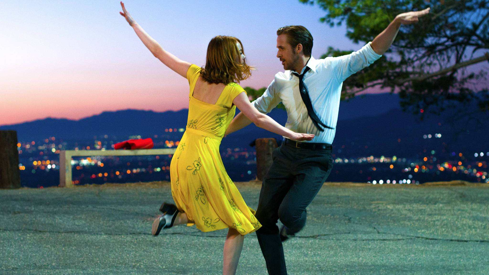
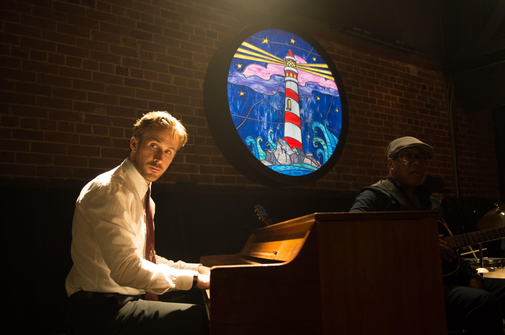

Mia là một nữ diễn viên tự do kiêm nhân viên pha chế luôn mang một ước mơ trở thành một nữ diễn viên nổi tiếng. Trong một lần trên tuyến đường cao tốc đông đúc vào mùa Đông ở Los Angeles, cô đã vô tình chạm mặt Sebastian, một nhạc công Jazz với đam mê muốn mở một hộp đêm mang phong cách Jazz cho riêng mình.
Sau nhiều lần gặp gỡ và trò chuyện, mối quan hệ giữa Mia và Seb ngày càng một thân thiết hơn, cả hai chia sẻ cho nhau nghe về ước mơ và khát vọng của mình và luôn dành những lời động viên cho nhau để cùng thực hiện ước mơ đó. Tuy nhiên, Seb trên con đường mở hộp đêm Jazz cho riêng mình đã gặp phải nhiều khó khăn và anh khá thất vọng với những công việc mà mình đang làm hiện tại còn Mia thì cũng gặp vô vàn những rắc rối trong các buổi thử vai của mình. Vì mải mê với công việc, cả hai dần dần không còn dành nhiều thời gian bên nhau để chia sẻ hay tâm sự nên dần dần khoảng cách của cả hai đã bắt đầu lớn dần ra. Nhiều năm sau, Mia đã trở thành một diễn viên nổi tiếng và kết hôn cùng một người đàn ông khác còn Seb cũng đã hoàn thành được ước mơ của mình, tuy nhiên cả hai đã không còn là của nhau nữa.
“Từ giây phút đầu tiên trong phân cảnh mọi người trên đường phố L.A nhảy múa và ca hát trên điệu nhảy Another Day of Sun, người xem như biết được mình đang chứng kiến một kiệt tác âm nhạc thời hiện đại với sự nhuần nhuyễn ăn ý trong từng điệu nhảy mà các vũ công đã thực hiện xuyên suốt bộ phim” - theo đánh giá của Rotten Tomatoes.
Âm nhạc
Đối với một bộ phim nhạc kịch như thế này thì các bản nhạc chắc hẳn là một thứ không thể nào thiếu được, một số ca khúc nổi bật với mìnhtrong bộ phim có thể kể đến như Another Day of Sun, Someone in the Crowd, Late fot the date, A Lovely Night, The End.
Các bài hát trong phim rất đa dạng và mang nhiều màu sắc khác nhau từ vui vẻ, nhộn nhịp cho đến nhẹ nhàng và sâu lắng. Các bài hát đều mang một câu chuyện hoặc một thông điệp về cuộc sống của các nhân vật trong phim.
Cảm nhận của mình
Câu chuyện tình yêu giữa Mia và Seb đã cho mình thấy được rất khó để vừa có tình yêu lẫn sự nghiệp, chỉ có thể có một trong hai và muốn có được thứ này phải đánh đổi bằng một thứ khác. Seb và Mia đến cuối cùng đã hoàn thành được ước mơ và tâm nguyện của mình nhưng câu chuyện tình yêu của họ thì mãi mãi không thể nào có thể quay trở lại được.
